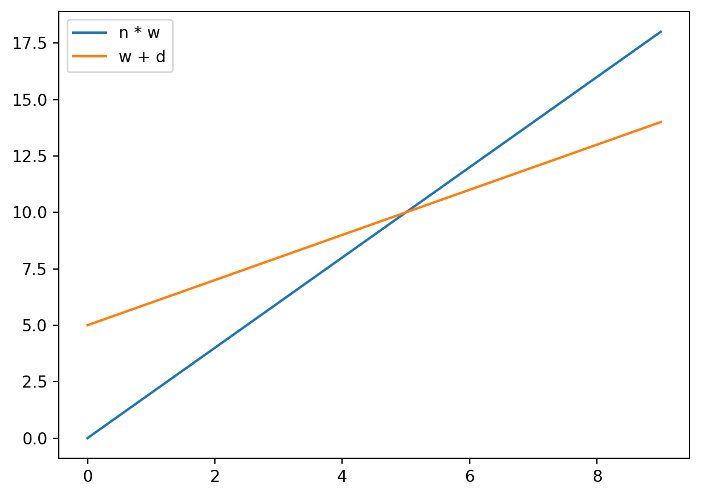

In our lecture, we introduced the learning within our martrix framework. I think there was a lot of content in the lecture and would like for you to be able to go over it a bit, and try things out yourself.
Definitions
Today, we will work with code cells of Colab to create a multi-class perceptron than can correctly classify dice when run.
Setup
The Dice
You will need a code cell that includes at least the following:
Before we messed with the bias, we modified how learning took place at all.
Specifically, we increased or decreased all values in a row by some fixed number.
Versus adding or subtracting from the relevant edges.
It looked like this.
for loc, row inenumerate(grade):for correct in row:if correct: learn[loc] = learn[loc] *1.1else: learn[loc] = learn[loc] *.9
Instead of this:
for loc, row inenumerate(grade):for correct in row:if correct: learn[loc] = learn[loc] + dice[loc]else: learn[loc] = learn[loc] - dice[loc]
Mathematically
We can express this mathematically by considering:
Old weights \(w\)
New weights \(w`\) (w “prime”)
Dice value \(d\)
Initially, we multiplied:
\[
w` = n \times w
\]
Later, we added:
\[
w` = w + d
\]
We note these are both linear transformations.
They create lines.
Say, imagine \(n = 2\) and \(d = 5\)

Your Task
Steps
Construct a series of additions or multiplications.
They may be by scalars
Like 1.1 or 2
They may be by vectors
Like [0,0,0,0,1,0,0,0,0]
You do not have to do the same kind of transfer for correct or incorrect.
You could scalar add in one place and vector multiply in another.
As a bonus, you may also change the bias however you like.
See how close you can get to achieving a diagonal, and!
Don’t forget to check your code more than once
It is randomized, and you don’t want to just get lucky.
Final Product
You should have a Colab document which, when run:
Creates a random matrix.
Modifies that random matrix to better detect dice.
Captures 6 true positives.
Has the minimum number of false positives possible.
Has a note of 100-200 words explaining what changes you made, and why.
“I just tried something” is fine, but do state, e.g., what “something” means to you.
Source Code
---title: Falsifyformat: html---# Background## ConnectionsIn our lecture, we introduced the *learning* within our martrix framework. I think there was a lot of content in the lecture and would like for you to be able to go over it a bit, and try things out yourself.## Definitions- Today, we will work with *code cells* of Colab to create a multi-class perceptron than can correctly classify dice when run.## Setup## The Dice- You will need a code cell that includes at least the following:```{python}import numpy as npone = [0,0,0,0,1,0,0,0,0]two = [0,0,1,0,0,0,1,0,0]thr = [0,0,1,0,1,0,1,0,0]fou = [1,0,1,0,0,0,1,0,1]fiv = [1,0,1,0,1,0,1,0,1]six = [1,0,1,1,0,1,1,0,1]dice = np.array([one, two, thr, fou, fiv, six])print(dice)```- You will probably also want "fair" dice. - Each row sums to one, even though... - Each row has a different number of non-zero values.```{python}divider = np.array([1,2,3,4,5,6]).reshape(1,6)fair_dice = (dice.transpose() / divider).transpose()fair_diceprint(fair_dice)```- You should have some familiarity with what these code blocks do, even if you wouldn't have written them yourself without them being provided. - Run them a few times. - Try to make some minor edits and predict what will change. - See if your are correct. - Get them working again.### The Neural Network- We made a neural network with random "edge weights".```{python}learn = np.random.rand(6,9)```- We also made a backup copy so we could start over, easily, at any time.```{python}backup = learn.copy()```- It should look like this:```{python}print(learn)```### Supervision- We compared against an answer key, which was just a diagonal. - This is the superviser in supervised learning. - It knows the answers. - It can provide feedback to the learning framework.```{python}key = np.array([ [ True, False, False, False, False, False], [False, True, False, False, False, False], [False, False, True, False, False, False], [False, False, False, True, False, False], [False, False, False, False, True, False], [False, False, False, False, False, True]])```### Learning- Learning occured in a few stages.- First, we also made sure to start with a fresh "`learn`" matrix, by copying from the backup.```{python}learn = backup.copy()print(learn)```- Then, we would compare against the answer key to see how accurate the current neural network was at predicting dice.```{python}grade = np.equal(key, 1<= fair_dice @ learn.transpose())print(grade)```- Then, we used a loop. - For every dice, - For every value it could predict, correct or otherwise. - If correct, reward the row with increased weight. - Else, penalize the row with reduced weight.```{python}for loc, row inenumerate(grade):for correct in row:if correct: learn[loc] = learn[loc] + dice[loc]else: learn[loc] = learn[loc] - dice[loc]```- Finally, we can see how well we did. - Recall, we want a diagonal here.```{python}(1<= fair_dice @ learn.transpose()) +0```# The Problem## In Lecture- In lecture we dealt with the following problem: - We could predict "no" for all die to be any number. - This was highly accurate (83%). - This was highly useless (captured 0% of true positives). - Any learning attempt was complicated somehow.### The "Bias"- Even with negative weights, we have a problem: **The Threshold**.- We need a way to decide exactly when the sum is "enough" to trigger a fire.- We need to shift the "goalposts" without rewriting all our weights.#### $b$- The **Bias** is a number we add to the sum *before* deciding to fire.- It represents how "easy" it is to make the neuron fire.- **High Bias:** The neuron is "trigger happy" and fires easily. - My "movie good" neuron is *highly biased* toward Ridley Scott films.- **Negative Bias:** The neuron is "stubborn" and needs a very high positive sum to fire. - My "movie good" neuron is *negatively biased* against *Predator* films.#### The Completed Formula- Include the bias term $b$:$$\sum_{i=1}^{n} w_i x_i + b $$- If the result is $> 0$, the neuron fires (1).- If the result is $\le 0$, it stays silent (0).#### Visualizing the Bias- In a graph, the bias is often shown as a special input node that is **always** 1, multiplied by its own weight $b$.```{dot}// | echo: falsegraph PerceptronWithBias { rankdir=TD; bgcolor="transparent" node [shape=circle, fontcolor = "#ffffff", color = "#ffffff"] edge [color="white", fontcolor="white";]; subgraph cluster_input { label="Inputs"; fontcolor="white"; color="white"; node [style=filled, fillcolor="red"]; X1; X2; X3; } subgraph cluster_bias { label="Bias"; fontcolor="white"; color="white"; node [style=filled, fillcolor="green"]; B [label="1"]; } node [style=filled, fillcolor="blue"]; Neuron [label="∑"]; X1 -- Neuron [label="w1"]; X2 -- Neuron [label="w2"]; X3 -- Neuron [label="w3"]; B -- Neuron [label="b", color="yellow"];}```#### Trying it out- We tried different *biases* with our learning framework.```{python}for bias in [3.5,4,4.5]:print("Bias of ", bias)print((bias <= fair_dice @ learn.transpose()) +0)```# The Solution- Or part of it.## Previously...- Before we messed with the bias, we modified how learning took place at all.- Specifically, we increased or decreased *all* values in a row by some fixed number. - Versus adding or subtracting from the relevant edges.- It looked like this.```{.python code-line-numbers="4-6"}for loc, row in enumerate(grade): for correct in row: if correct: learn[loc] = learn[loc] * 1.1 else: learn[loc] = learn[loc] * .9```- Instead of this:```{.python}for loc, row in enumerate(grade): for correct in row: if correct: learn[loc] = learn[loc] + dice[loc] else: learn[loc] = learn[loc] - dice[loc]```### Mathematically- We can express this mathematically by considering: - Old weights $w$ - New weights $w`$ (w "prime") - Dice value $d$- Initially, we multiplied:$$w` = n \times w$$- Later, we added:$$w` = w + d$$- We note these are both linear transformations. - They create lines. - Say, imagine $n = 2$ and $d = 5$```{python}#| echo: falseimport matplotlib.pyplot as pltxs = np.arange(10)ys_1 = xs *2ys_2 = xs +5plt.plot(xs,ys_1, label="n * w")plt.plot(xs,ys_2, label="w + d")plt.legend()```# Your Task## Steps- Construct a series of additions or multiplications.- They may be by *scalars* - Like `1.1` or `2`- They may be by *vectors* - Like `[0,0,0,0,1,0,0,0,0]`- You do not have to do the same kind of transfer for correct or incorrect. - You could scalar add in one place and vector multiply in another.- As a bonus, you may also change the bias however you like.- See how close you can get to achieving a diagonal, and! - Don't forget to check your code *more than once* - It is randomized, and you don't want to just get lucky.## Final Product- You should have a Colab document which, when run: - Creates a random matrix. - Modifies that random matrix to better detect dice. - Captures 6 true positives. - Has the minimum number of false positives possible. - Has a note of 100-200 words explaining what changes you made, and why. - "I just tried something" is fine, but do state, e.g., what "something" means to you.